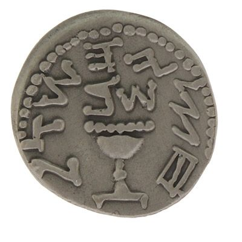

Why the Half Shekel?

Video not playing? Watch on YouTube
Listen to the audioMP3
Zoom chat (22 messages)
- 21:07:02Jacob Zelmanovitzsefaria.org/Exodus.30.12?ven=The_Contemporary_Torah,_Jewi…
- 21:09:00Steven ZelcerShiurim Shimi mentioned: torahmoment.com/backtable/shiur-16/ and torahmoment.com/backtable/mini-1/
- 21:09:35Jacob ZelmanovitzFeels like we're playing the part of doc in the comments here
- 21:15:21Jacob Zelmanovitzsefaria.org/Exodus.30.12?ven=The_Contemporary_Torah,_Jewi…
- 21:16:49Jacob Zelmanovitzsefaria.org/Exodus.30.12?ven=The_Contemporary_Torah,_Jewi…
- 21:17:18Jacob Zelmanovitzsefaria.org/Exodus.30.12?ven=The_Contemporary_Torah,_Jewi…
- 21:36:37Steven Zelceramazon.com/Shadal-Exodus-Samuel-Luzzattos-Interpretation/…
- 21:37:33Steven Goldburdamazon.com/Shadal-Torah-Commentary-Samuel-Luzzatto/dp/965…
- 21:37:36Jacob Zelmanovitzhardcover cheaper than softcover
- 21:44:01Steven Zelcerוַיָּבֹא־גָ֥ד אֶל־דָּוִ֖ד וַיַּגֶּד־ל֑וֹ וַיֹּ֣אמֶר ל֡וֹ הֲתָב֣וֹא לְךָ֣ שֶׁבַע שָׁנִ֣ים ׀ רָעָ֣ב ׀ בְּאַרְצֶ֡ךָ אִם־שְׁלֹשָׁ֣ה חֳ֠דָשִׁ֠ים נֻסְךָ֨ לִפְנֵי־צָרֶ֜יךָ וְה֣וּא רֹדְפֶ֗ךָ וְאִם־הֱ֠י֠וֹת שְׁלֹ֨שֶׁת יָמִ֥ים דֶּ֙בֶר֙ בְּאַרְצֶ֔ךָ עַתָּה֙ דַּ֣ע וּרְאֵ֔ה מָה־אָשִׁ֥יב שֹׁלְחִ֖י דָּבָֽר׃
- 21:50:31Steven Zelcertorahmoment.com/backtable/shiur-17/
- 21:51:41Steven Zelcertorahmoment.com/backtable/shiur-17/
- 21:52:34Steven Zelcer16. Bereishis 49:19-20
- גָּ֖ד גְּד֣וּד יְגוּדֶ֑נּוּ וְה֖וּא יָגֻ֥ד עָקֵֽב׃ (ס)
- Gad shall be raided by raiders, But he shall raid at their heels.
- מֵאָשֵׁ֖ר שְׁמֵנָ֣ה לַחְמ֑וֹ וְה֥וּא יִתֵּ֖ן מַֽעֲדַנֵּי־מֶֽלֶךְ׃ (ס)
- Asher’s bread shall be rich, And he shall yield royal dainties.
- 21:52:51Steven Zelcerהַיְרֻצ֤וּן בַּסֶּ֙לַע֙ סוּסִ֔ים אִֽם־יַחֲר֖וֹשׁ בַּבְּקָרִ֑ים כִּֽי־הֲפַכְתֶּ֤ם לְרֹאשׁ֙ מִשְׁפָּ֔ט וּפְרִ֥י צְדָקָ֖ה לְלַעֲנָֽה׃
- Can horses gallop on a rock? Can it be plowed with oxen? Yet you have turned justice into poison weed And the fruit of righteousness to wormwood.
- 21:53:40Steven Zelcerkorenpub.com/collections/rabbi-amnon-bazak
- 21:53:51Steven Zelcerkorenpub.com/collections/rabbi-amnon-bazak/products/to-th…
- 21:59:58Steven Goldburd[WHEN THOU NUMBEREST THEM.] The meaning of that there be no plague among them, when thou numberest them is: if they do not give atonement money at the very moment of the numbering, a plague will strike. However, Yefet says it means that if they are numbered and do not give their ransom, they will fall before their enemies when they go to war.73In other words, that there be no plague among them, when thou numberest them refers to defeat by their enemies.